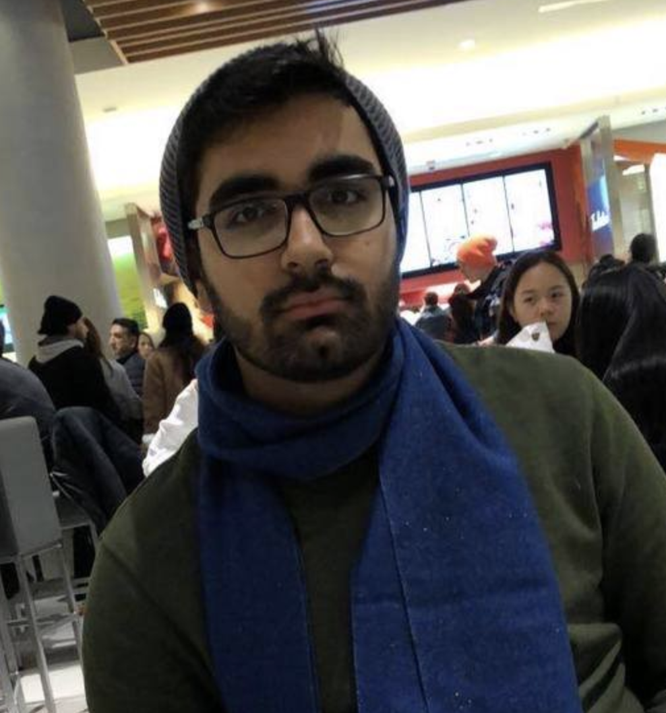
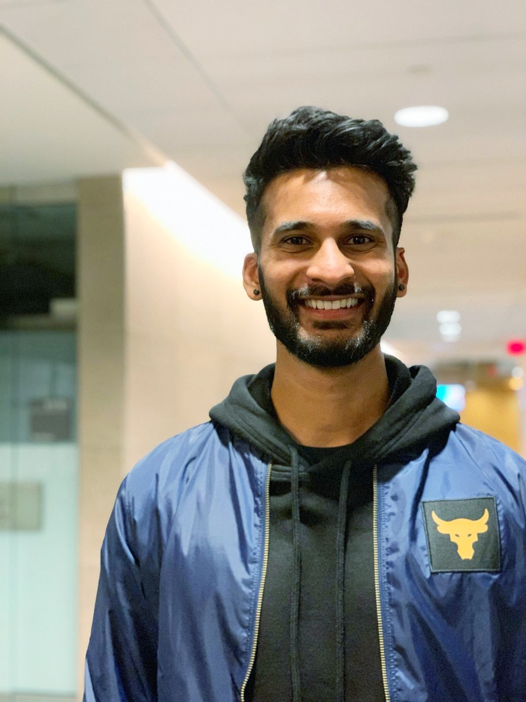
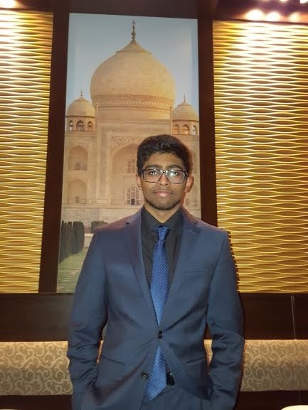
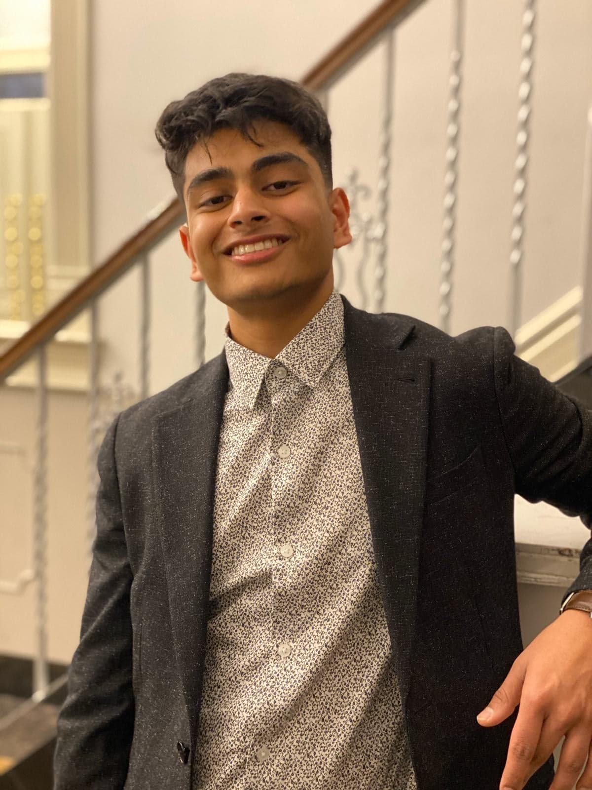
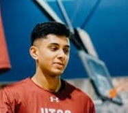
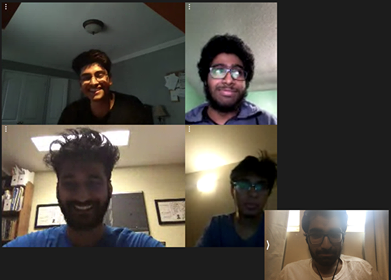

Team Goals
- Being part of a project with a realistic workflow and real team members
- getting hands on experience with the Agile software development life cycle
- Working with a real client to meet their needs in a timely and efficient way
- Collaborating software and computer science technical skills within the team
- Making sure that everyone is being worked according to their strengths
Our Team
Ahmad Shah

Ahmad Shah is a 3rd year student specializing in Computer Science at the University of
Toronto. He has been exposed to a wide variety of languages and architectures over his 5
years of programming experience. He is particularly attracted to Web Development, owing
in part to his co-op position at Cineplex Digital Media in the fall of 2019. During this
co-op term, Mr. Shah developed Menu Board Web Applications for the entirety of McDonalds
South America – seeing his boards deployed live to locations in Uruguay, Argentina and
Brazil. Mr. Shah enjoys working on large software projects with a team, since he enjoys
the process of being a part of something bigger than himself. Apart from programming,
Mr. Shah has a passion for learning (human) languages. He self-learned French to fluency
and is currently learning Spanish. Group members who work with Mr. Shah can expect to
find themselves dealing with someone who likes to take charge and get things done.
Strengths:
- Front-end: Vue JS, Vanilla HTML/CSS/JavaScript, Bootstrap
- Back-end: NodeJS, ExpressJS
- Version Control: Git
- Very Proficient in Python and moderately proficient in Java
Jesse Francispillai

Jesse Francispillai is a 4th year student at the University of Toronto studying Computer
Science. His previous work experience includes eight months of automation development at
Fleet Complete and another twelve months of DevOps intern experience at Oracle where he
has learned a variety of strategies to provide continuous software delivery while
working in an intensely Agile oriented, globally remote team. Mr. Francispillai has been
exposed to various programming languages over his student career including Python and
Java, as well as an enormous amount of team and company-oriented software such as Git,
Teamcity, Jira and virtual machines. Outside of his professional life, Mr. Francispillai
loves to be outside with his friends and enjoys keeping a very active life working out
at the gym and partaking in recreational activities. Jesse’s technical skills,
communication and overall positive views on problems bring value to any team that he
works with.
Strengths:
- Solid two years+ experience with agile SDLC and teamwork
- Python
- Java
Maduvan Kasi

Maduvan Kasi is a 4th year student at the University of Toronto, specializing in Computer
Science. Mr. Kasi has accrued a wide breadth of knowledge during his time in university,
through both his coursework, and his co-op terms at Amazon and RBC. He’s worked on a
variety of professional projects that have exposed him to technologies like Android
Studio, AWS, and ExpressJS. In addition to his professional work, Mr. Kasi has enjoyed
being part of the CS community, as seen by his previous roles on AMACSS and the Hack The
Valley 2 team. In his spare time, Mr. Kasi finds entertainment in trivia competitions and
game development, the latter of which led to his co-founding of the UTSC Game Dev club,
which is still active today. In summary, Mr. Kasi is a capable team member who is
enthusiastic about any project he undertakes, and strives his hardest to see things
through to completion.
Strengths:
- Various AWS microservices; OCR and related ML techniques
- Proficient in python, Java, C, and Javascript.
- Takes initiative and is a strong team player.
Husni Fareed

Husni Fareed is a 3rd year Computer Science Student studying at the University of Toronto. With
over two years of web development experience and three years of formal Computer Science
education, Mr.Fareed has found and grown his passion in Web Development and has previously worked
at Ontario Power Generation in their E-Learning Department to help build online courses and tools
used to create these online courses. He is an active member at the Association of Mathematics,
Computer Science, and Statistics (AMACSS), at the University of Toronto and currently holds the
position of Director of Media for the association. Along with his involvement on-campus, he is a
member of a youth-development group off-campus in Toronto and has previously been the Director of
Media for this association too. Throughout his career, Mr.Fareed has proven that he is able to
rise to the occasion, and is always ready to work together to overcome the next challenge.
Strengths:
- Front end development and debugging using HTML, CSS, JS, and JQuery.
- Implementing communication with a team.
Joseph Augustine

Joseph Augustine is a 3rd year computer science student at the University of Toronto.
Over his three years of education he has learned, experienced, and developed multiple
projects utilizing different languages, and frameworks. Mr. Augustine is proficient in
both web based, and non-web based languages including but not limited to Java, Python,
HTML, CSS, and JavaScript. He has an eagerness to tackle new problems, and learn the
different aspects within software production. His desire to learn new skills within the
industry has pushed him to pursue a multitude of roles in software development. He
recently completed a co-op position at Caseware International this past fall of 2019.
During this work term he was able to learn the duties, and daily activities of an
automation tester actively participating within the software cycle. Mr. Augustine’s
eagerness to solve, and tackle new problems allows for him to always be ready for his
next
Strengths:
- Ambitious, experience in automation testing.
- Back-end: NodeJS, ExpressJS
- Java
- Python
Team Expectations
| Group Photo |  |
| Methods of communication | Facebook Messenger: general chat + audio calls Discord Server: screen-sharing + video conferencing Google Doc: message board Github Group: anything else that needs to also been seen by TA |
| Communication response times | Facebook Messenger: 12 hr response time if urgent. 24 hrs otherwise. Urgency will be signalled by an all caps URGENT pre-prended to the message. Also tag @everyone. |
| Regular meeting times | Fridays 3:15pm - 4:00pm |
| Meeting attendance | Mandatory, if someone can’t make it let the team know a day in advance. |
| Running meetings | Meetings on Messenger at the specified times. Screensharing is available too. Timing will be through a timeslot (eg. 3:15 - 4:00) unless finished early. Weekly reviewer will also be assigned during meeting. |
| Meeting preparation | Have a google docs with the weeks current issues, achievements, and coming week’s goals, update relevant issues before meeting. |
| Division of work | Scrum Master ( Jesse Francispillai ) assigns work for coming week during every week’s mandatory meeting, use Trello to keep track. |
| Submitting work | Have all main work done 1 day before the deadline, review and finishing touches will be done on final day 12 hours before deadline. Any non-code documents will be reviewed by that week’s assigned reviewer (reviewer will be appointed each week during mandatory meeting). |
| Contingency planning | If someone drops out or is academically dishonest we will immediately contact
the prof/our TA. For everything else, we will contact them and give them 48 hours to address any issues that they might be facing and get back on track. The person should either be tagged in the group chat or personally messaged to ensure they see the message. |
The signed version of the expectations can be foundhere